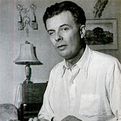

La carretera, Cormac McCarthy
Ficha técnica
- Club de lectura
- Mundos no deseados
- Datos de la obra
- Título: La carretera
- Autor: Cormac McCarthy
- País: Reino Unido
- Género: ciencia ficción, ficción distópica
- Fecha de publicación: 1932
- Coordinadora
- Rebeca Luján
- Calendario
- 15 de mayo: presentación
- 30 de mayo: Inicio de la conversación en el foro de la plataforma
- 15 de junio: videochat con Rebeca Luján
- 16 de junio: finaliza la lectura
Sobre la obra
Un mundo feliz (en inglés Brave New World) es la novela más famosa del escritor británico Aldous Huxley, publicada por primera vez en 1932. La novela es una distopía que anticipa el desarrollo en tecnología reproductiva, cultivos humanos e hipnopedia, manejo de las emociones por medio de drogas (soma) que, combinadas, cambian radicalmente la sociedad. El mundo aquí descrito podría ser una utopía, aunque irónica y ambigua: la humanidad es ordenada en castas donde cada uno sabe y acepta su lugar en el engranaje social, saludable, avanzada tecnológicamente y libre sexualmente. La guerra y la pobreza han sido erradicadas, y todos son permanentemente felices. Sin embargo, la paradoja es que todas estas cosas se han alcanzado tras eliminar muchas otras: la familia, la diversidad cultural, el arte, el avance de la ciencia, la literatura, la religión, la filosofía y el amor. El título tiene origen en una obra del autor William Shakespeare, La tempestad, en el acto V, cuando Miranda pronuncia su discurso:
O wonder!
How many goodly creatures are there here!
How beauteous mankind is! O brave new world,
That has such people in't.
Sobre Aldous Huxley
Aldous Leonard Huxley (Godalming, 26 de julio de 1894 - Los Ángeles, 22 de noviembre de 1963) fue un escritor y filósofo británico que emigró a los Estados Unidos. Miembro de una reconocida familia de intelectuales, es conocido por sus novelas y ensayos, pero publicó también relatos cortos, poesías, libros de viajes y guiones. A través de sus novelas y ensayos, ejerció como crítico de los roles, convenciones, normas e ideales sociales. Se interesó, asimismo, por los temas espirituales, como la parapsicología y el misticismo, acerca de las cuales escribió varios libros. Se le considera uno de los más importantes representantes del pensamiento moderno.